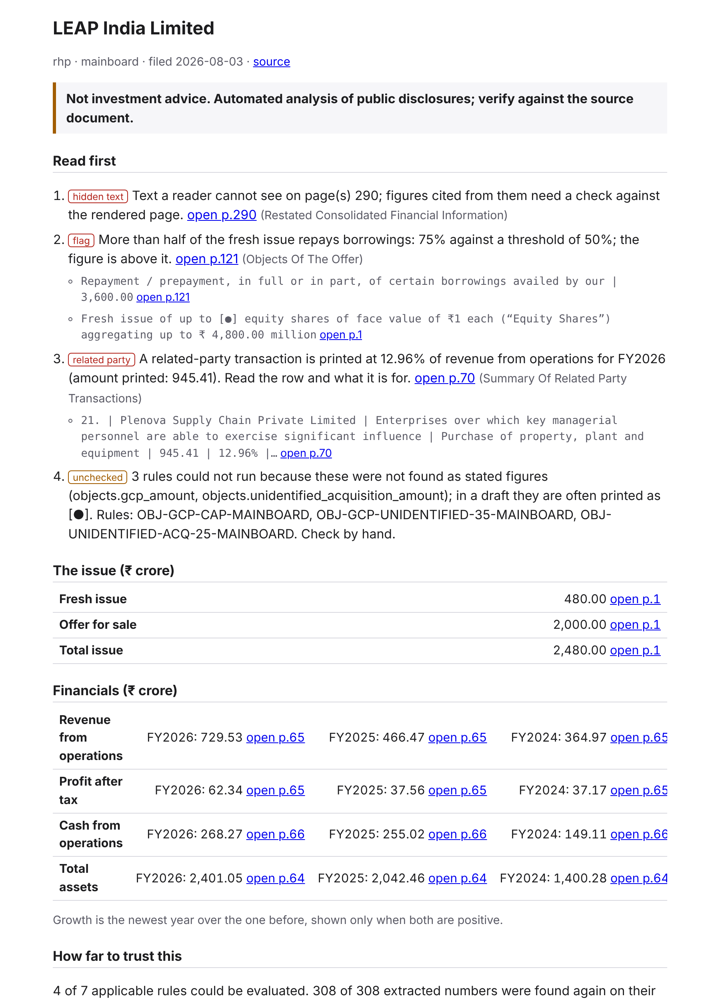
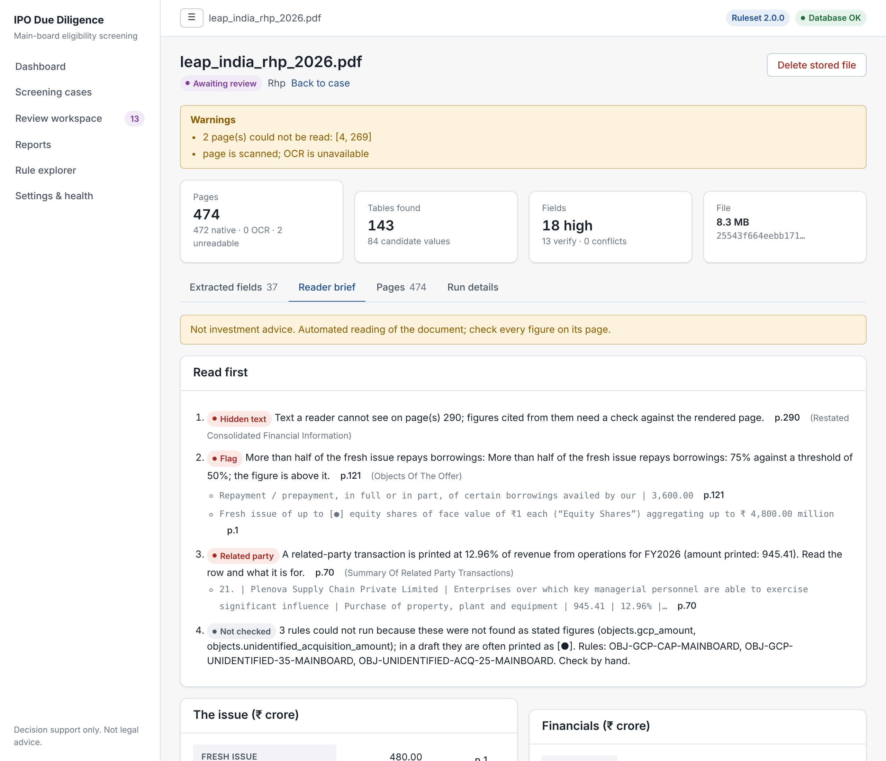

Read an offer document in minutes, not days.
IPO Engine reads a DRHP or RHP, shows the numbers that matter with the exact page each one came from, and tells you which pages to open first. It holds back anything the document disagrees with itself about. It runs on your own computer: no language model, no cloud, no API key.
Every number cites its page
A figure is shown only after it is found again on the page it names and agrees with the other tables.
Never silently wrong
When the document's own tables conflict, the figure is withheld with the reason and the pages to compare.
Fully offline
Confidential drafts never leave the machine. Deterministic rules and table parsing; no LLM.
Reader and screening in one
A page-cited reader, plus an eligibility screening app with a review queue and audit trail.
Live demo: real public filings
These briefs were produced by the reader from public DRHPs and RHPs. Pick a filing to see what to read first. Every page link opens the filing's public source.
| Issuer | Document | Filed | To read | Flags | Related party | Withheld | Rules checked |
|---|
How it works
One pipeline, every stage checked before the next one trusts it.
Parse
PDF to page-tagged text and tables, with units and column headers. Text a reader cannot see is dropped and flagged.
Extract and verify
Issue size, financials and objects are re-read from the cited page, footed against accounting identities and compared across tables.
Check
Twelve dated red-flag rules and a related-party check run on verified facts only. Evidence and figures, never a verdict.
Brief
One page per filing: what to read first, each item with its page, plus a ranked home page across filings.


Measured, not claimed
Numbers are computed by ipo eval against hand-written labels and exported with this page. The labels were written
by an AI reading the PDFs with a different tool; an independent human audit is the next step, so treat this as strong evidence, not proof.
Run it yourself
Python 3.12 and uv. One command per filing.
git clone https://github.com/VenkateshPanda0/Ipo-engine.git cd Ipo-engine uv sync uv run ipo --data-dir data run ~/Downloads/acme-drhp.pdf --issuer "Acme Ltd" # open the brief it prints, or data/reports/index.html
The web app (eligibility screening with a review queue) starts with uv run ipo serve and npm run dev in frontend/.